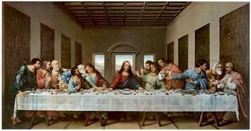

(Image 3) ‘The Last Supper’ by Da Vinci, 1498, 346.46in x 181.10in

(Image 4) ‘Two Children Threatened by a Nightingale’ by Max Ernst, 1924, 69.8 x 57.1 x 11.4 cm
(Image 5) ‘Water Lilies’ by Emil Nolde, 1927, unknown size
(Image 3) ‘The Last Supper’ by Da Vinci, 1498, 346.46in x 181.10in
(Image 4) ‘Two Children Threatened by a Nightingale’ by Max Ernst, 1924, 69.8 x 57.1 x 11.4 cm
(Image 5) ‘Water Lilies’ by Emil Nolde, 1927, unknown size
(Image 2) ‘Last Supper’ by Ugolino da Siena, 1325, unkown size
THE PAINTING
“The diffusion of glass was not the only factor making windows act, even unconsciously, like the eyes of buildings: the establishment of linear perspective played a crucial role. Perspective was maybe the critical discovery of the Renaissance, allowing architecture, until then considered a mechanical activity, to be subsumed into the higher realm of visual art. Perspective began to deeply influence the character of architecture in Europe. The human eye became the lens through which architecture was conceived as well as represented. The view became a key concern of architects, particularly after Romanticism consecrated the idea of panorama, at the beginning of the 19th century. Despite the preoccupation with optics, the metaphor of the window as eye never took off.” Manfredo di Robilant 1
intro [ The window was the origin for the precise illusion of realistic space. The frame of the window transformed the spatial world onto the illusion of a flat surface. One that blocked its passage and show it only from that one perspective. The painting became the window as a representational form, but the paintings lacked the aspect of precise perspective2. The painting also brought a representation onto a flat surface, but artists back before the Renaissance did not know how to create convincing depth in a painting.]
intro [ The window was the origin for the precise illusion of realistic space. The frame of the window transformed the spatial world onto the illusion of a flat surface. One that blocked its passage and show it only from that one perspective. The painting became the window as a representational form, but the paintings lacked the aspect of precise perspective2. The painting also brought a representation onto a flat surface, but artists back before the Renaissance did not know how to create convincing depth in a painting.]
perspective [ Before the Renaissance, paintings that used perspective did not exist. They were representations of space without looking like the real world. The technique of geometry was close, but wasn’t mathematically correct. In the 1300s artists created forms, human figures and objects that were 3 dimensional. The figures needed to be put in a believable space. But the illusion of space was not well visualised. The paintings had a flat look to them. For instance the ‘Last Supper’ from 14th century by Ugolino da Siena (Image 2). Everything is out of proportion and perspective was being experimented on. The figures have different sizes and the space is so presented that it fitted in a fitting way in the frame. Of course this was a choice, but artists realised at that time they could not visualise perspective and it’s a perfect example of the problem facing painters around 1400. To create a good representation of space, artists approach needed to become more mathematical and precise. ]
Da Vinci [ In The Last Supper by Da Vinci from 1498 (Image 3) you see the resolution of perspective. You see the use of the vanishing point, the horizon line and the converging lines together with the figures and the space they are in (Image 4). So how did the change in perspective occur?]
Da Vinci [ In The Last Supper by Da Vinci from 1498 (Image 3) you see the resolution of perspective. You see the use of the vanishing point, the horizon line and the converging lines together with the figures and the space they are in (Image 4). So how did the change in perspective occur?]
brunelleschi [ Filippo Brunelleschi was successful in creating a 3 dimensional representation of space by using a system. This system could create accurate perspective. Within this system3 he used 3 elements: a vanishing point, the horizon line and the diagonal lines that would come from the vanishing point. Brunelleschi’s experiment made in the early 15th century showed that linear perspective could produce an image that looked like a realistic illusion of a 3 dimensional space onto a 2 dimensional surface. It was a system that one can follow to create very accurate images of 3 dimensional space. It was the transition from a volumetric world to a flat surface.]
alberti [ The architect and theoretician Leon Battista Alberti then created a book called ‘De pictura’ that continued Brunelleschi’s discovery and was a practical system for artists on how to create linear perspective. There existed more artists that worked with Brunelleschi’s research, but Alberti created a practical sequencel guidebook that could really guide artists. One of his other original contributions was the ‘Alberti Window’ [0]. A window that works as a grid where the artist can make use of the lines as coordinates and use the same grid as in the paper.]
alberti [ The architect and theoretician Leon Battista Alberti then created a book called ‘De pictura’ that continued Brunelleschi’s discovery and was a practical system for artists on how to create linear perspective. There existed more artists that worked with Brunelleschi’s research, but Alberti created a practical sequencel guidebook that could really guide artists. One of his other original contributions was the ‘Alberti Window’ [0]. A window that works as a grid where the artist can make use of the lines as coordinates and use the same grid as in the paper.]
“First of all, on the surface on which I am going to paint, I draw a rectangle of whatever size I want, which I regard as an open window through which the subject to be painted is seen;…” - Leon Battista Alberti 4
Evolution of frame [ The function of the frame was to separate the world of painting with its surrounding and reality. The transition to a different interest in realistic painting was not the only change. The functions and meanings of the frame in painting also changed. They changed according to the aesthetic concepts of the period, style, or individual artist. Pictures and paintings were not always framed, and until the 13th–15th century were predominantly site-specific and painted onto the wall.5 They were called frescoes and they were a technique of mural painting executed on wet lime plaster.]
surrounding/reality [ In the 14th century artists designed the frame to be an integral part of the entire creative process. To talk about the function of the frame in painting, I think it is necessary to talk about the physical frame in this paragraph. The enhanced frame led the eye of the spectator into the depth of the painting and its three-dimensionality, increasing the feeling of space within the painting.6 The frame was the window from the actual real environment to the imagined world of the painting and the 19th century frames used the frame to create that illusion even more. The paintings ‘Two Children Threatened by a Nightingale’ by Max Ernst (Image 4) and ‘Water Lilies’ by Emil Nolde (Image 5) are examples that show the frames becoming a big part of the creative process. Not everyone was a fan of this. Emil Nolde wrote: “I put very serious black frames around almost all of my pictures. They could take that. They were the greatest contrast to the traditional, playful French Rococo-style plaster frames that one could possibly imagine. The public didn’t like my way of doing things, they wanted to see gold”.7]
dissapearing of frame [ Up until the 20th century the frame had been considered absolutely necessary to the presentation of paintings, and even today its presence signifies that a work is finished and complete. A painting requires a frame which isolates it from its surroundings. The beginning of the 20th century the (golden) frame started to dissapear to abandon the idea of it being higher art and based on the pure judgement of taste.8 The classic tasks of frames: to bound, separate, emphasise, improve were called into question. The abandonment of perspective and mimesis in favour of abstraction, the Cubism movement and Dada constructions created new ambitions and posibilities for painting in general, that caused the frame to dissapear.]
Evolution of frame [ The function of the frame was to separate the world of painting with its surrounding and reality. The transition to a different interest in realistic painting was not the only change. The functions and meanings of the frame in painting also changed. They changed according to the aesthetic concepts of the period, style, or individual artist. Pictures and paintings were not always framed, and until the 13th–15th century were predominantly site-specific and painted onto the wall.5 They were called frescoes and they were a technique of mural painting executed on wet lime plaster.]
surrounding/reality [ In the 14th century artists designed the frame to be an integral part of the entire creative process. To talk about the function of the frame in painting, I think it is necessary to talk about the physical frame in this paragraph. The enhanced frame led the eye of the spectator into the depth of the painting and its three-dimensionality, increasing the feeling of space within the painting.6 The frame was the window from the actual real environment to the imagined world of the painting and the 19th century frames used the frame to create that illusion even more. The paintings ‘Two Children Threatened by a Nightingale’ by Max Ernst (Image 4) and ‘Water Lilies’ by Emil Nolde (Image 5) are examples that show the frames becoming a big part of the creative process. Not everyone was a fan of this. Emil Nolde wrote: “I put very serious black frames around almost all of my pictures. They could take that. They were the greatest contrast to the traditional, playful French Rococo-style plaster frames that one could possibly imagine. The public didn’t like my way of doing things, they wanted to see gold”.7]
dissapearing of frame [ Up until the 20th century the frame had been considered absolutely necessary to the presentation of paintings, and even today its presence signifies that a work is finished and complete. A painting requires a frame which isolates it from its surroundings. The beginning of the 20th century the (golden) frame started to dissapear to abandon the idea of it being higher art and based on the pure judgement of taste.8 The classic tasks of frames: to bound, separate, emphasise, improve were called into question. The abandonment of perspective and mimesis in favour of abstraction, the Cubism movement and Dada constructions created new ambitions and posibilities for painting in general, that caused the frame to dissapear.]
white cube [ Not only dissapeared the artistic and decorative frame, the whole frame dissapeared. Instead the idea of the white cube appeared. The invention of the white cube, that is theorized by writer and theorist Brian O’Doherty, referes to the white-walled gallery. The wall and the environment of the painting becomes the frame. The works of art came lose from their familiar surroundings that included a connection to its style or type of art, like the frames, and thus had a speculative or opinionated aesthetic about it. They now were positioned in a non-speculative space that deserved its judgement. The gallery space itself became the material to be altered by art. Artists started to make site-specific art as it becoming the frame of art, the presentation of art itself.]
conclusion [ To sum it all up, Brunelleschi was one of the biggest influences of realistic and accurate perspective in painting. Alberti’s use of the window as a grid, using Brunelleschi’s system, was very usefull for a lot of artists. The frame was based on the aesthetic concepts of the period, style, or individual artist. Paintings were realistic representations of reality. When Picasso painted his paintings of windows as self-relfections, it was more of an abstract simulation. With the need of creating realistic imagery, the illusion needed to look as similair as possible to the real world. The frame of the painting functioned as a separation of the world of the painting and reality. At the beginning there was no frame, but the wall. Then the frame had many functions, to separate, to mark it as higher art by being golden or included elements of the painting to become one with the content. Then the frame was called into question that realised into the painting being by itself.9]
conclusion [ To sum it all up, Brunelleschi was one of the biggest influences of realistic and accurate perspective in painting. Alberti’s use of the window as a grid, using Brunelleschi’s system, was very usefull for a lot of artists. The frame was based on the aesthetic concepts of the period, style, or individual artist. Paintings were realistic representations of reality. When Picasso painted his paintings of windows as self-relfections, it was more of an abstract simulation. With the need of creating realistic imagery, the illusion needed to look as similair as possible to the real world. The frame of the painting functioned as a separation of the world of the painting and reality. At the beginning there was no frame, but the wall. Then the frame had many functions, to separate, to mark it as higher art by being golden or included elements of the painting to become one with the content. Then the frame was called into question that realised into the painting being by itself.9]
1 Window, Manfredo di Robilant, p66
2 Origin of Perspective, http://pages.cs.wisc.edu/~chunsong/book/Origin.part1.pdf
3 Origin of Perspective, http://pages.cs.wisc.edu/~chunsong/book/Origin.part1.pdf
4 Perception as a Function of Desire in the Renaissance, John S. Hendrix, http://docs.rwu.edu/cgi/viewcontent.cgi?article=1006&context=saahp_fp
5 Hardop kijken, Ad de Visser, p54
6 https://maitaly.wordpress.com/2011/04/28/brunelleschi-and-the-re-discovery-of-linear-perspective/
7 In Perfect Harmony; Picture + Frame, 1850 - 1920, Van Gogh Museum, Eva Mendgen, p225
8 In Perfect Hamorny; Picture + Frame, 1850 - 1920, Van Gogh Museum, Eva Mendgen, p221
9 Inside the White Cube: The Ideology of the Gallery Space, Brian O’Doherty, p14
2 Origin of Perspective, http://pages.cs.wisc.edu/~chunsong/book/Origin.part1.pdf
3 Origin of Perspective, http://pages.cs.wisc.edu/~chunsong/book/Origin.part1.pdf
4 Perception as a Function of Desire in the Renaissance, John S. Hendrix, http://docs.rwu.edu/cgi/viewcontent.cgi?article=1006&context=saahp_fp
5 Hardop kijken, Ad de Visser, p54
6 https://maitaly.wordpress.com/2011/04/28/brunelleschi-and-the-re-discovery-of-linear-perspective/
7 In Perfect Harmony; Picture + Frame, 1850 - 1920, Van Gogh Museum, Eva Mendgen, p225
8 In Perfect Hamorny; Picture + Frame, 1850 - 1920, Van Gogh Museum, Eva Mendgen, p221
9 Inside the White Cube: The Ideology of the Gallery Space, Brian O’Doherty, p14